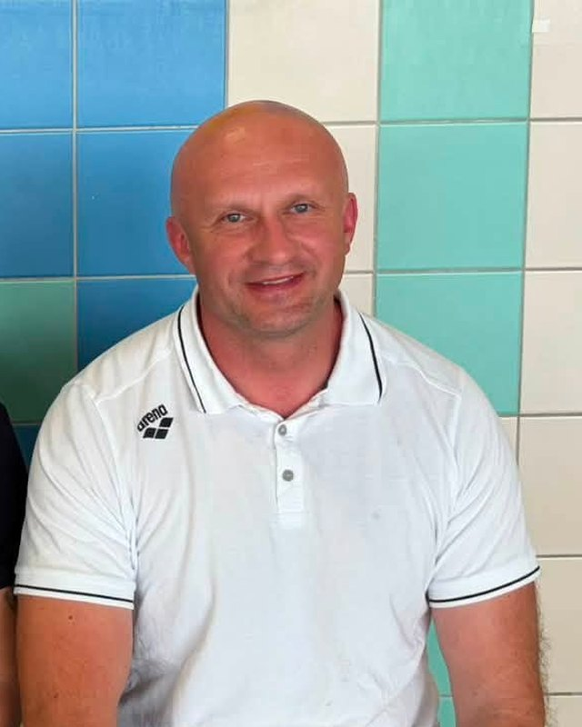
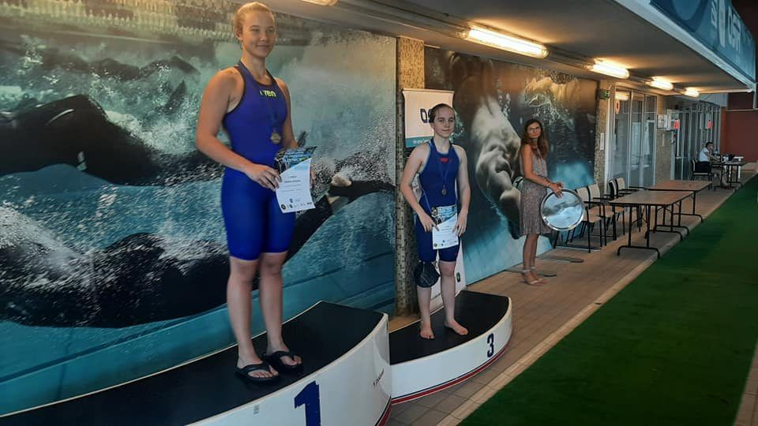
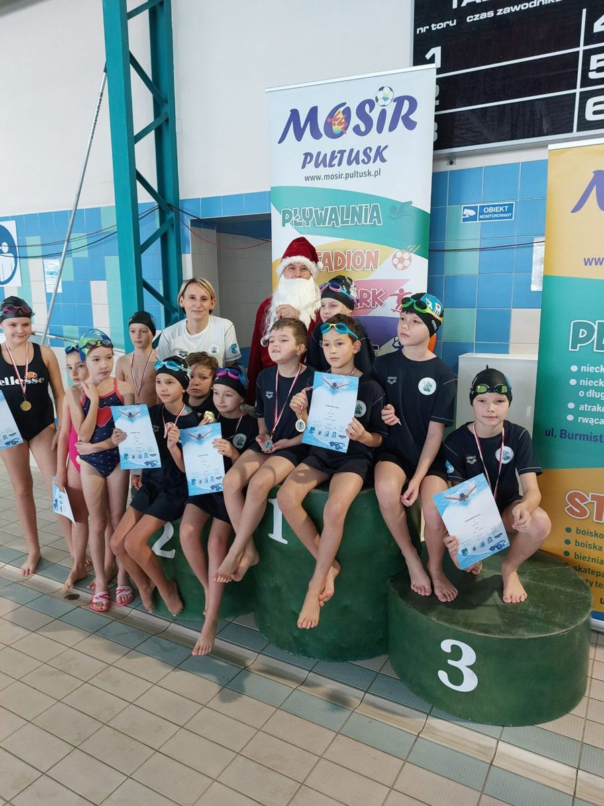
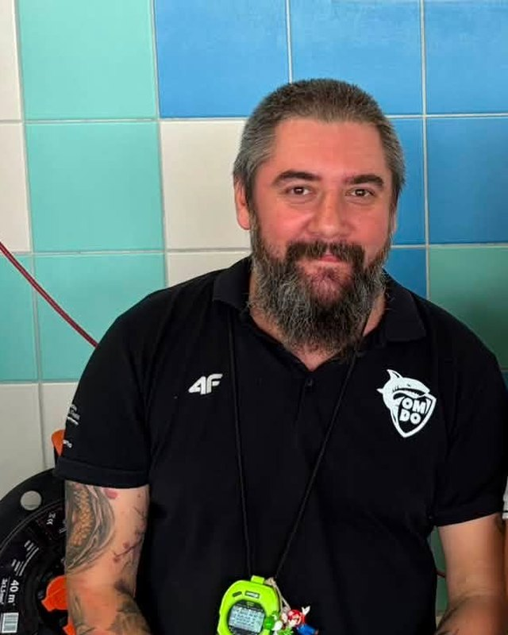

Trener · grupy D, E
Mariusz Osica
Założyciel klubu i trener od 2012 roku.

Strona główna / O klubie
Uczniowski Klub Sportowy „Posejdon – Athletic” z Pułtuska – sekcja pływacka. Uczymy, trenujemy i bawimy się pływaniem.
Kim jesteśmy
Prowadzimy naukę i doskonalenie pływania dzieci, młodzieży i dorosłych. Naszym zadaniem jest przygotowanie młodych pływaków do rywalizacji sportowej – od pierwszej lekcji po finały mistrzostw Polski.
Skupiamy młodzież z powiatu pułtuskiego i powiatów sąsiednich, a organizując zawody na pływalni w Pułtusku, promujemy Gminę Pułtusk w regionie.

Nasze wartości
Pływanie ma sprawiać radość – na treningu i na zawodach.
Pewność w wodzie to podstawa każdego etapu szkolenia.
Krok po kroku: od nauki pływania do sportowej rywalizacji.
Zawodnicy, trenerzy i rodzice – razem tworzymy klub.
Historia
16 maja. Wpis do ewidencji UKS Starostwa Powiatowego w Pułtusku (nr 29) i licencja klubowa Polskiego Związku Pływackiego.
Klub organizuje kurs – egzamin na sędziego pływania zdaje 12 osób.
Franciszek Łyszkowski zdobywa brąz MP 14-latków na 100 m stylem klasycznym.
12 000 zł dotacji z Ministerstwa Sportu i Turystyki na sprzęt i zajęcia.
Ludzie klubu
Prezesem założycielem i trenerem klubu został Mariusz Osica. Od początku pracę trenerską w sekcji pływackiej prowadzili także Sylwia Befinger, Kamil Michałowski, Paweł Dagis i Mariusz Mroziewicz.

Trener · grupy D, E
Założyciel klubu i trener od 2012 roku.

Trener · grupy A, B, C
W klubie od początku. Trener medalistów Mistrzostw Polski i Mistrzostw Warszawy.
Trenerka · grupy D, E
Prowadzi zajęcia grup D i E na basenie rekreacyjnym.
Trener · grupa C
Współprowadzi treningi grupy C.
Gdzie nas znaleźć
ul. Burmistrza Stanisława Śniegockiego 3, 06-100 Pułtusk
Publiczna Szkoła Podstawowa nr 4 im. Ireny Szewińskiej
ul. New Britain 1, 06-100 Pułtusk
Dane klubu
Wspierają nas
Zapisz dziecko na trening albo dołącz do grupy Masters.